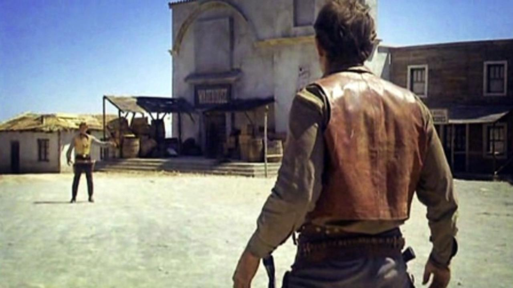

Cos'è un Genere? (Convenzioni e Iconografia)
Il genere è una categoria di film che condividono caratteristiche simili. Queste caratteristiche si chiamano convenzioni. Ad esempio, in un film Horror ci aspettiamo il buio e un mostro; in un Western ci aspettiamo cappelli da cowboy e duelli.
Oltre ai temi, i generi usano l'iconografia: oggetti o ambientazioni che identificano subito il tipo di film. Una spada laser ci dice "Fantascienza", mentre una pistola a tamburo ci dice "Western". Queste scorciatoie visive aiutano il regista a creare aspettative immediate nello spettatore.
